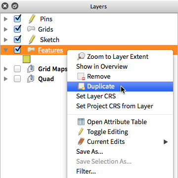
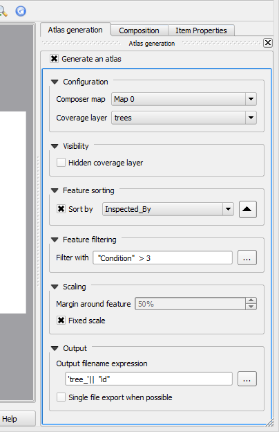
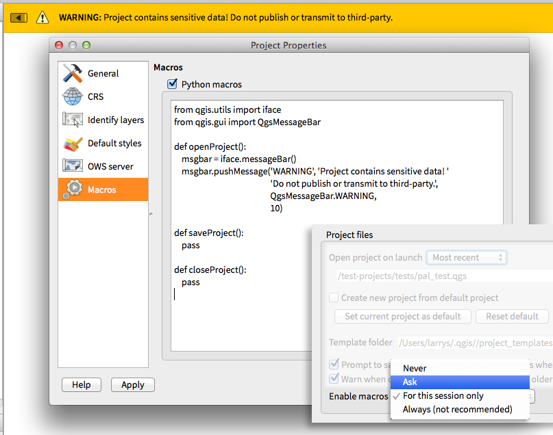
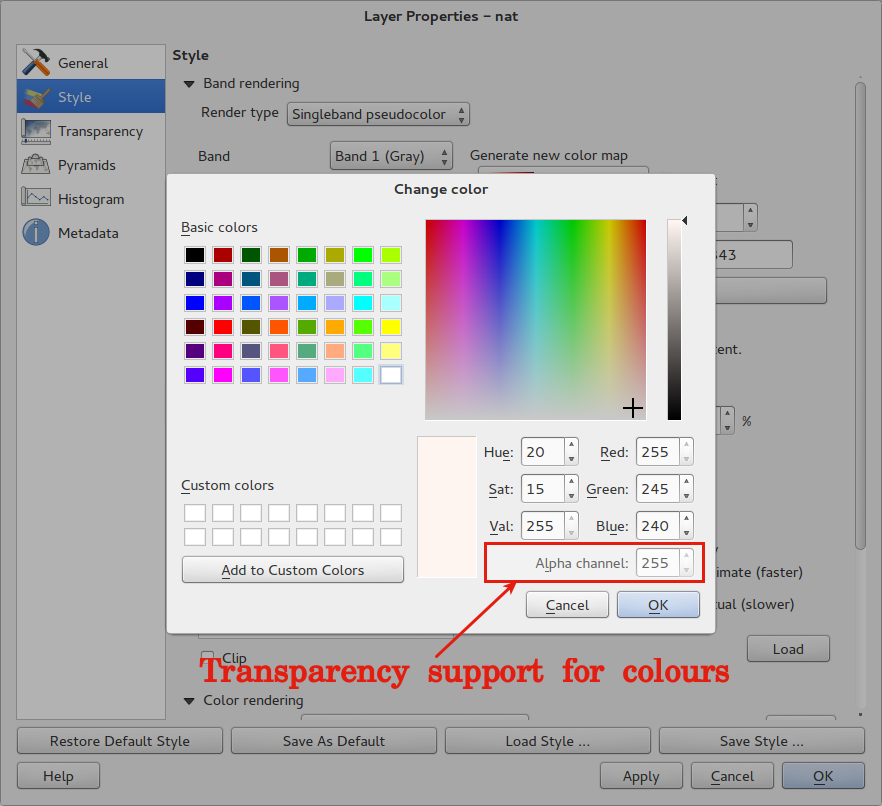
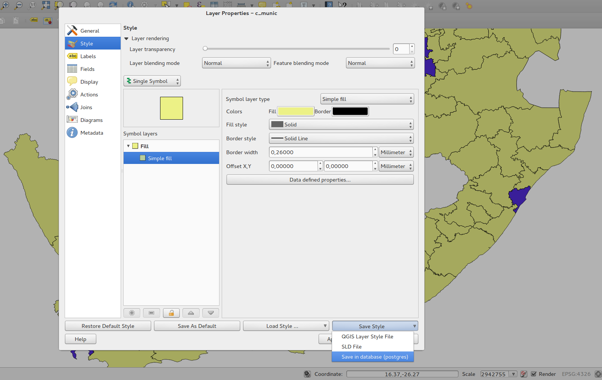
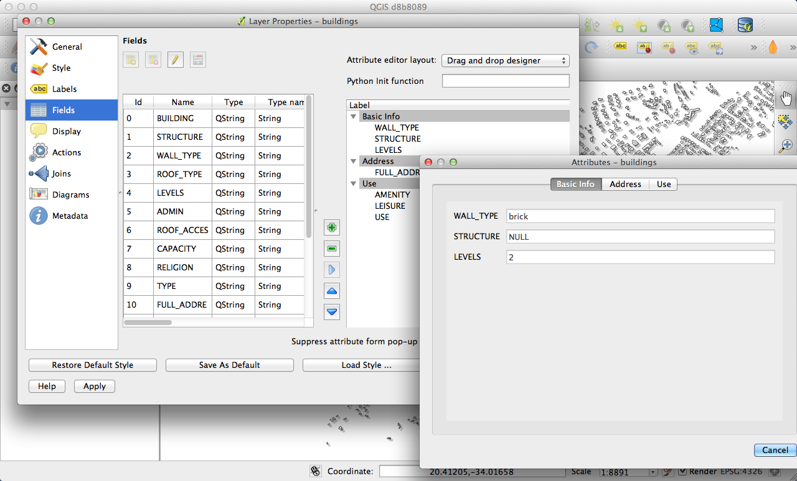

QGIS 2.0の変更履歴¶
解析ツール¶
機能：プロセッシングコマンダー¶
ジオプロセシング機能に素早くアクセスするために、単に処理司令官（はCtrl + Alt + M）を起動し、あなたが探しているツールの名前を入力し始めます。司令官はあなたに利用可能なオプションを表示し、あなたのためにそれらを起動します。これ以上のツールを見つけるために、メニューを検索しません。彼らはあなたの指先に今あります。

機能：ヒートマッププラグインの改善¶
ヒートマッププラグインは、ヒートマップのはるかに高速に作成して、その結果、多くの改良と最適化を見てきました。また、今、カーネル関数は、ヒートマップを作成するために使用されているのかを選択できます。

機能：プロセッシングサポート¶
SEXTANTEプロジェクトは、コア機能としてQGISに移植され、組み込まれています。 SEXTANTEは「プロセッシング」に改名され、QGISの新しいメニューが導入され、豊富な空間解析ツールのツールボックスにアクセスできます。 処理ツールボックスには、GRASS、OTB、SAGAなどの多くの一般的なオープンソースツールの解析機能へのアクセスを提供するために、新しいツールやフックを簡単に追加できるようにするPythonプログラミングAPIが用意されています。

機能: プロセッシングモデラー¶
新しい処理フレームワークの大きな特徴の1つは、ツールをグラフィカルに組み合わせる機能です。** Processing Modeller **を使用すると、一連の小さな単一目的モジュールから複雑な分析を構築できます。これらのモデルを保存し、より複雑なモデルのビルディングブロックとして使用することができます。すばらしいパワーがQGISに統合され、使いやすい！

アプリケーションとプロジェクトオプション¶
機能: デフォルトの起動プロジェクト指定とプロジェクトテンプレート¶
QGIS 2.0を使用すると、QGISを起動すると、最後に実行したプロジェクトが読み込まれます。 on）、 `` Specific``（QGIS起動時に常に特定のプロジェクトを読み込みます）。プロジェクトテンプレートディレクトリを使用して、テンプレートプロジェクトを保存する場所を指定することができます。そのディレクトリに格納されているプロジェクトは `` Project - > New from template``メニューを呼び出すときにテンプレートとして利用できます。

機能：システム環境変数¶
現在のシステム環境変数は、アプリケーションの[オプション]ダイアログで表示および設定することができるようになりました。GUIアプリケーションが必ずしもユーザーのシェル環境を継承しないMacなどのプラットフォームに役立ちます。また、SAGA、GRASSなどの処理ツールボックスで制御される外部ツールセットの環境変数の設定や表示にも便利です。ソースコードの特定のセクションのデバッグ出力をオンにするために使用します。

機能：ユーザー定義のズーム縮尺¶
これで、アプリケーション用にズームスケールのリストを構成できるようになりました。オプションで、プロジェクトごとにオーバーライドできます。このリストはメインウィンドウのステータスバーの `` Scale``ポップアップコンボボックスに表示され、現在のデータソースを効率よく表示したり操作したりするための既知のスケールにすばやくアクセスできます。定義されたスケールは、他のプロジェクトまたは別のQGISアプリケーションにインポートできるXMLファイルにエクスポートできます。

ブラウザ¶
機能:アプリ内ブラウザパネルの改善¶
- ワイルドカードまたは正規表現でディレクトリをフィルタできます
- 新しい ``プロジェクトホーム ``（現在のプロジェクトの親ディレクトリ）
- ダイアログで選択したディレクトリの `` Properties``を表示します
- どのディレクトリを
Fast scanするか選択して下さい - ファイルシステムのブラウズダイアログで `` Favourites``に直接 ``ディレクトリを追加する ``を選択する
- Macにおける新しい
/Volumes(外部ドライブアクセス用の隠しディレクトリ) - 新しい `` OWS``グループ（使用可能なマップサーバ接続の照合）
- ブラウザパネル間のドラッグアンドドロップ操作のための2番目のブラウザを開きます（ `` View - > Panels - > Browser（2） ``）
- アイコンがアイテムグループタイプ（ファイルシステム、データベース、マップサーバ）でソートされました
- レイヤー `` Properties``のビジュアルレイアウトが改善されました

データプロバイダ¶
機能：ラスターデータプロバイダーオーバーホール¶
ラスターデータプロバイダーシステムは完全にオーバーホールされました。この作業から生まれた最も優れた新機能の1つは、新しいレイヤーとしてラスターレイヤーを保存するために、[レイヤー ->名前を付けて保存]機能です。このプロセスでは、レイヤーをクリップ、再サンプリング、および新しい[座標参照系]に再投影できます。ラスタレイヤーをレンダリング画像として保存することもできます。たとえば、カラーパレットを適用した単一バンドラスターを使用する場合、レンダリングレイヤーをジオリファレンスされたRGBレイヤーに保存できます。


機能：ウェブカバレッジサービスプロバイダが追加されました¶
QGISはWeb Coverage Serviceレイヤーのネイティブサポートを提供します.WCSを追加するプロセスは、WMSレイヤーまたはWFSレイヤーを追加するプロセスに似ています。
機能：デフォルトでラスター2％累積カット¶
多くのラスター画像製品は、外見が洗い流された画像をもたらす多数の異常値を有する。QGIS 2.0では、画像の色空間を決定する際にデフォルトで2％〜98％の累積カットを使用するなど、ラスターのレンダリング動作に対して、より詳細な制御が可能です。ここの画像は、デフォルト設定で同じ画像をレンダリングするときのQGIS 1.8（左）対QGIS 2.0（右）を示しています。

機能：フォーマットを識別するWMS¶
複数の既知のフォーマットがサーバーによってサポートされている場合、WMSレイヤーの識別ツールの結果のフォーマットを選択できるようになりました。サポートされるフォーマットは、HTML、地物（GML）、およびプレーンテキストです。地物（GML）フォーマットが選択されている場合、結果はベクターレイヤーと同じ形式になり、ジオメトリが強調表示され、属性とジオメトリを含む地物がクリップボードにコピーされ、別のレイヤーに貼り付けられます。

機能: WMTS のサポート¶
QGISのWMSクライアントは、タイムスライスなどのサブデータセットの選択を含むWMTS（Web Mapping Tile Service）をサポートするようになりました。準拠しているサーバーからWMSレイヤーを追加する場合は、表示するタイムスライスを選択するよう求められます。

一般情報¶
機能：Quantum GISは今や 『QGIS』 という名前のみ利用しています.¶
「Quantum GIS」の「Quantum」は決して特別な意味を持ちませんでした。私たちのプロジェクトを「Quantum GIS」と「QGIS」の両方として引用することの二重性は混乱を招いていました。私たちはプロジェクトを合理化しており、そのプロセスの一環として正式に「クォンタム」という言葉の使用をやめています。以来、「QGIS」（大文字のすべての文字で綴られています）としてのみ知られています。これを反映するため、コードと広報資料をすべて更新します。

ラベリング¶
機能：新しいラベリングシステム¶
ラベリングシステムは完全に改良されました。これには、ドロップシャドウ、ハイウェイシールド、より多くのデータバインドオプション、さまざまなパフォーマンス強化など、多くの新機能が追加されました。私たちはゆっくりと「古いラベル」システムをやっていますが、このリリースで利用可能な機能はまだありますが、フォローアップリリースでは消えてしまうはずです。

機能：式ベースのラベルプロパティ¶
ラベルのプロパティには、通常のラベルとルール式のフルパワーを使用できるようになりました。ほぼすべてのプロパティを式またはフィールド値で定義して、ラベル結果をより詳細に制御できます。式はフィールドを参照することができます（たとえば、フォントサイズをフィールド 『font’の値に設定することもできます）。より複雑なロジックを含めることもできます。
バインド可能なプロパティの例を次に示します。
- フォント
- サイズ
- スタイル
- バッファサイズ

機能: 古いラベルエンジンは廃止されました¶
QGIS <= 1.8で利用可能な古いラベル付けエンジンの使用は現在推奨されていませんが、廃止されていません。これは、ユーザーが既存のプロジェクトを古いラベルエンジンから新しいラベルエンジンに移行できるようにするためです。
以下のガイドラインはQGIS2.0で利用されている古いエンジン用です:
- 廃止予定のラベリングタブは、新規プロジェクトまたはそのラベリングエンジンを使用しない古いオープンプロジェクトの「ベクターレイヤープロパティー」ダイアログから削除されます。
- Deprecated tab remains active for older opened projects, if any layer uses them, and does not go away even if saving the project with no layers having the older labelling engine enabled.
非推奨のラベリングタブは、現在のプロジェクトでPythonコンソールコマンドを使用して有効/無効にすることができます。
>>> QgsProject.instance().writeEntry('DeprecatedLabels', '/Enabled', True | False)
# or
>>> QgsProject.instance().removeEntry('DeprecatedLabels', '/')
注意：QGISの次の安定リリースの前に廃止予定のラベルエンジンが完全に削除される可能性が非常に高い* *があります。古いプロジェクトを移行してください。

レイヤ凡例¶
特集：凡例のビジュアルフィードバックとオプション¶
- レイヤー内の地物とシンボルごとの合計数
- 編集モードのベクターレイヤーには、コミットされていない（保存されていない）編集を示す赤い鉛筆が表示されるようになりました
- アクティブレイヤーには下線が引かれ、マルチレイヤーの選択や選択がない場合に表示されます
- 非リスト項目の空白をクリックすると、選択項目がクリアされるようになりました
- `` Right-clicks``はコンテキストメニューを表示する前に ``左クリック 『』として扱われ、2回ではなく1回のクリックが可能です
- グループとレイヤーは、オプションで太字のフォントスタイルにすることができます
- このようなレンダリングが遅いかもしれないプロジェクトでは、ラスターレイヤーで生成されたプレビューアイコンをオフにできるようになりました

機能：既存の地図レイヤーを複製する¶
地図レイヤーの凡例で、選択したベクターレイヤーとラスターレイヤーを複製します。同じデータソースを別のレイヤーとして再度インポートするのと同様に、スタイルとシンボル属性をコピー/貼り付けます。

機能：マルチレイヤー編集コマンドの切り替え¶
凡例で複数のレイヤーを選択できるようになり、編集モードのベクタレイヤーのいずれかがある場合は、現在のコミットされていない編集を保存、ロールバック、またはキャンセルすることを選択できます。ユーザーは、選択に関係なく、すべてのレイヤーでこれらのアクションを適用することもできます。

マップコンポーザ¶

機能:コンポーザラベルで式を利用できるようになりました¶
1.8の作曲者ラベル項目はかなり限定されており、$ CURRENT _DATEという単一のトークンしか使用できませんでした。2.0では完全な表現のサポートが追加され、最終ラベルのパワーとコントロールが大きくなりました。
次のような式を持つラベル。
This was printed on: [% format_date( $now, 'dd.MM.yyyy')%]
印刷時間(と表示時間）は調べられて以下の表示があります:
This was printed on: 06.09.2013
地図帳の生成が有効になっている場合、現在アクティブな地物の属性値には次のような式を使用できるようになります。
Asset ID [% "ID" %] and the Tree Type is [% "TreeType" %]

機能：オートスナップ線¶
すばらしい印刷地図を作成するには、マップ項目をきちんと整列させることが重要です。オブジェクトを別のオブジェクトの近くにドラッグするだけで、簡単に作曲者のオブジェクトを整列させることができる自動スナップラインが追加されました。

機能：手動スナップ線¶
時には、オブジェクトをカーテンディスタンスに合わせる必要があります。新しいマニュアルスナップラインを使用すると、手動スナップ線を追加することができます。これにより、共通のアライメントを使用してオブジェクトを整列させることができます。トップまたはサイドルーラーからドラッグして新しいガイドラインを追加するだけです。

機能：地図シリーズ生成¶
これまで地図シリーズを生成する必要がありましたか？もちろんあります。コンポーザには、地図帳機能を使用した地図シリーズ生成機能が組み込まれています。カバレッジレイヤーはポイント、ライン、ポリゴンにすることができ、現在の地物属性データは、その場で値置換のためのラベルで使用できます。

機能：地図フレームでの自動概要サポート¶
メインの地図フレームの現在のエリアをより小さなオーバービューウィンドウに表示する必要があります。さあ、できます。マップフレームには、他の範囲を表示する機能が含まれており、移動すると更新されます。これをアトラス世代の特徴と共に使用することで、コンポーザの中核はいくらか滑らかなマップ生成を可能にします。概要フレームスタイルは、通常のマップポリゴンオブジェクトと同じスタイリングを使用しており、創造性は決して制限されません。

機能:レイヤの混合¶
レイヤブレンドを使用すると、レイヤを新しくエキサイティングな方法で組み合わせることができます。古いバージョンでは、レイヤーを透明にするだけでしたが、 「乗算する」、 「暗くなるだけ」などのより高度なオプションを選択できるようになりました。
ブレンドは、通常の地図ビューや印刷コンポーザーで使用できます。プリントコンポーザーでのブレンドを使って背景画像を最大限に活用する方法についての短いチュートリアルについては、「QGISを使ったビンテージマップデザイン」を参照してください。 <http://anitagraser.com/2013/07/29/vintage-map-design -using-qgis />`__ です。

機能:HTMLラベルサポート¶
HTMLサポートには、マップ・コンポーザーのラベル項目が追加され、最終的なマップをさらに詳細に制御できます。HTMLラベルはCSSスタイルシート、html、さらにはjavascriptをサポートしています。

機能:コンポーザの凡例でマルチカラムのサポート¶
コンポーザーの凡例は複数の列をサポートするようになりました。多くのクラスを持つ単一のレイヤーを複数の列に分割することはオプションです。単一シンボルレイヤーは、デフォルトでは単一のラインアイテムとして追加されるようになりました。レイヤー/グループタイトルにグループ、サブグループ、または非表示の3種類のスタイルを割り当てることができます。タイトルスタイルはアイテムの任意の視覚的なグループ分けを可能にする。例えば、1つのシンボルレイヤーを1つのラインアイテムまたはレイヤータイトル（1.8のように）で表示し、複数のレイヤーからのシンボルを1つのグループ（タイトルを隠す）にグループ化することができます。

機能：マップ・コンポーザー管理の更新¶
マップコンポーザの管理に次のような改善が作成されました:
- コンポーザの名前は作成時に指定できます,オプションで他のコンポーザ名からの選択もできます
- コンポーザを多重化できます
テンプレートから新規作成と指定(コンポーザマネージャ内) を使うとファイルシステムのどこかにあるテンプレートを使ってコンポーザを作成することができます- 親プロジェクトをコンポーザの作業スペースから直接保存できるようになりました
- すべてのコンポーザの管理作業は、コンポーザの作業スペースから直接アクセスできるようになりました

プラグイン¶
機能：プラグインマネージャの再構築¶
QGIS 1.xではプラグインの管理に2つのインタフェースが混乱していました.1つはすでにインストールされているプラグインを管理するためのものと、1つのプラグインリポジトリからのPythonプラグインの取得用のものです。QGIS 2.0では、プラグインをダウンロード、有効/無効、一般的に管理するためのワンストップショップ*を提供するプラグインマネージャー**を新たに導入しました。ああ、ユーザーインターフェースもサイドタブで分かりやすく、アイコンを簡単に認識できます！

プログラマビリティ¶
機能:新しいPythonコンソール¶
新しいPythonコンソールはさらに強力な機能を提供します。今では、自動完全サポート、構文の強調表示、調整可能なフォント設定を備えています。サイドコードエディタを使用すると、QGISセッションでPythonファイルを開いて実行できるように、より大きなコードブロックを簡単に入力できます。

機能：より多くの式関数¶
表現エンジンは、式ベースのラベルやシンボルのようなものを可能にするためにQGISをますます使用していますが、より多くの関数が式ビルダーに追加されており、式ビルダーを通してすべてアクセス可能です。すべての機能には、使いやすさのための包括的なヘルプと使用ガイドが含まれています。


機能:新しいクリーナーPython API¶
Python APIは、より洗練されたPythonのプログラミング体験を可能にするように改良されました。QGIS 2.0 APIはSIP V2を使用しています。このV2は、値を扱う際に必要とされる乱雑なtoString（）、toInt（）ロジックを削除します。型は、はるかに良いAPIを作るネイティブのPython型に変換されました。属性へのアクセスは、単純なキールックアップ、それ以上の索引ルックアップおよび属性マップを使用しないで、地物自体に対して行われます。
>>> feature['mycolumn'] = 10
>>> feature['mycolumn']
10
機能をレイヤーから読み取る方法も改良されており、将来のバージョンではマルチスレッドが可能です。
for feature in layer.getFeatures():
print feature['mycolumn']

機能:バージョン1.xリリースとのコード互換性¶
これはメジャーリリースであるため、以前の1.xリリースと完全に互換性のあるAPIではありません。 ほとんどの場合、あなたのコードを移植するのはかなり簡単です。使い始めるには このガイド を使うことができます。 さらに詳しいヘルプが必要な場合は、開発者メーリングリストを使用してください。

機能:Pythonプロジェクトマクロ¶
project.qgsファイルに保存されたPythonモジュールをロードして、次のプロジェクトイベントで特定の関数を実行できます。
openProject()saveProject()closeProject()
マクロを実行するかどうかは、アプリケーションオプションで設定できます。

シンボロジ¶


機能：カラー定義の透過性のサポート¶
色を選択するほとんどの場所で、QGISではアルファチャンネルを指定できるようになりました（どの色が透明であるかが決まります）。これにより、見栄えの良い地図を作成したり、ユーザーに見せたくないデータを簡単に隠すことができます。

機能：ラスターレイヤーのカラーコントロール¶
QGIS 2.0では、ラスターレイヤの表示方法を正確に制御することができます。ラスターレイヤーの輝度、コントラスト、彩度を完全に制御できます。ラスタをグレースケールで表示したり、指定した色で色付けすることもできます。

機能：レイヤー間でシンボロジをコピーする¶
1つのレイヤーから別のレイヤーにシンボロジをコピーするのがとても簡単になりました。いくつかの類似したレイヤーで作業している場合は、あるレイヤーで単に ``右クリック `` し、コンテキストメニューから ``コピースタイル `` を選び、別のレイヤーで ``ペーストスタイル `` を指定して下さい。

機能：データベースにスタイルを保存する¶
データベースベクタデータストアを使用している場合は、レイヤスタイル定義を直接データベースに格納できます。これにより、エンタープライズまたはマルチユーザー環境でスタイル付きレイヤーを簡単に共有できます。

機能：カラーランプのサポート¶
QGISシンボル設定の多くの場所でカラーランプが使用可能になり、豊富で拡張可能なカラーランプセットが搭載されたQGISが出荷されます。また、自分でデザインすることもできますし、多くの `cpt-city <http://soliton.vm.bytemark.co.uk/pub/cpt-city/>`テーマがQGISに含まれています。カラーランプは透過性を完全にサポートしています。

機能：すべてのレイヤータイプのカスタムデフォルトスタイルを設定する¶
QGISでは、既存の `` .qml``スタイルが定義されていないときに、新しいレイヤーを描画する方法を制御できます。新しいレイヤーのデフォルトの透明度レベルと、シンボルにランダムな色を割り当てる必要があるかどうかを設定することもできます。

ユーザーインターフェース¶

機能：サイドタブ、折りたたみ可能なグループ¶
私たちは、タブのレイアウトを標準化し、折り畳み可能なグループボックスを多くのダイアログに導入し、さまざまなオプションをより簡単にナビゲートし、画面の不動産をより有効に活用しました。

機能：ソフト通知¶
多くの場合、私たちはあなたに何かを伝えたいが、私たちはあなたの仕事をやめて行きたいとは思わない。新しい通知システムでは、QGISは地図キャンバスの上部に表示される黄色のメッセージバーを介して重要な情報を知らせることができますが、何か他のことをしているときにはそれに対処する必要はありません。プログラマーはPython APIを使用しても（プラグインなどから）これらの通知を作成できます。

機能：アプリケーションのカスタムフォントとQtスタイルシート¶
アプリケーションのユーザーインターフェイスに使用されるシステムフォントを設定できるようになりました。QGIS GUIアプリケーションの子であるか、アプリケーションのGUIスタイルシートをコピー/適用したC ++またはPythonプラグインは、そのスタイルを継承することができます。これは、プラットフォーム間のGUI修正や、QgsCollapsibleGroupBoxなどのカスタムQGIS Qtウィジェットを使用する場合に便利です。 。
現在のプラットフォーム用に生成されたQGIS GUIアプリケーションスタイルシートは、（PyQGISで）起動した後にアクセスできます。
qgis.utils.iface.mainWindow().styleSheet()

機能:ライブカラー選択ダイアログとボタン¶
インターフェース全体の各カラーチューザーボタンが更新され、現在の色が透明か、「アルファ」なコンポーネントかを視覚的にフィードバックするようになりました。新しいカラーボタンで開かれたカラーチューザーは、常にオペレーティングシステムのデフォルトになりました。ユーザが Options -> General -> Application の下で Live-updating color chooserダイアログを使用する をチェックしている場合、カラーチューザの変更は、すぐにカラーボタンに表示され現在編集中の項目がある場合は適用されます。


機能：ドラッグアンドドロップフォームビルダ¶
QGIS 2.0は、データ入力フォームを作成するためのすばらしい新しいシステムをサポートしています。ドラッグアンドドロップフォームデザイナーを使用すると、スマートな外観のフォームをタブで作成して、共通フィールドをまとめてグループ化することができます。これで、ユーザーのデータ入力の操作を簡単に制御できます。

機能：デフォルトのアクションツール¶
ベクターレイヤーアクションのユーザー（機能をクリックしたときに実行できる小さなタスク）は、ツールバーの新しいアクションツールが大好きです。それを使用すると、アクティブなアクションを選択し、そのアクションを呼び出すためにあなたの地物をクリックすることができます。